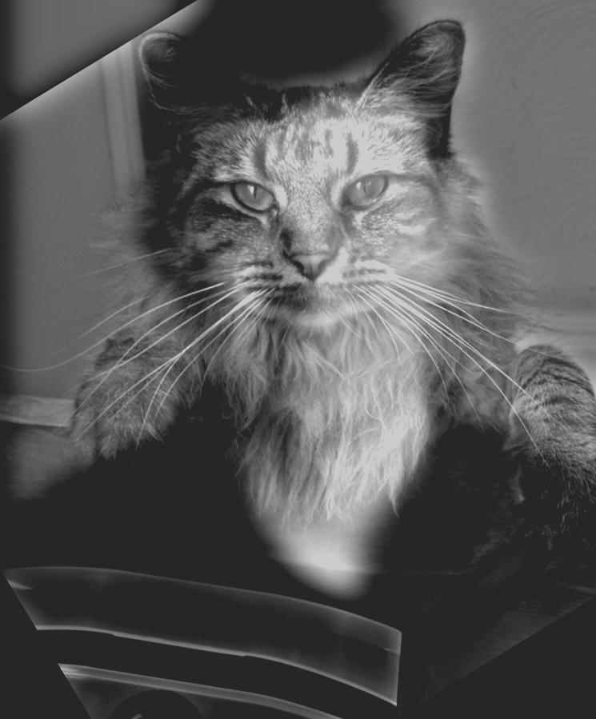

Hybrid Images
Approach Used and Results
Derek and cat Nutmeg. Approach as explained on the main page, with parameters \( \sigma_1 = 18, \sigma_2 = 16\) for standard deviation, \( k = [6\sigma] + 1\) for window size, and \( h_ 1 = 0.15, h_2 = 0.8\) as the lower and upper threshold, respectively.
Before


